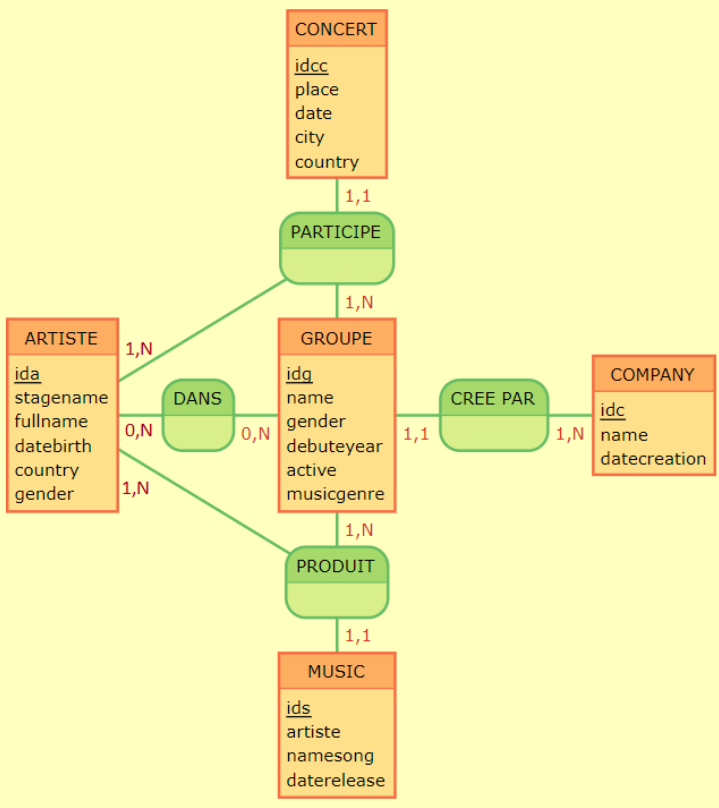

Bienvenue sur le site kpop
Le domaine d’application choisit est la pop coréenne. La pop coréenne « K-pop »
est un mouvement musical venu tout droit de la Corée du Sud. Le terme englobe plusieurs genres musicaux : la pop, évidemment, mais aussi le rock, le RnB, le hip hop, la dance ou encore la musique électronique.
Image MCD de la base de donnée

DTD ET XML
Pour consulter notre DTD cliquez ici
Pour consulter notre fichier XMLcliquez ici